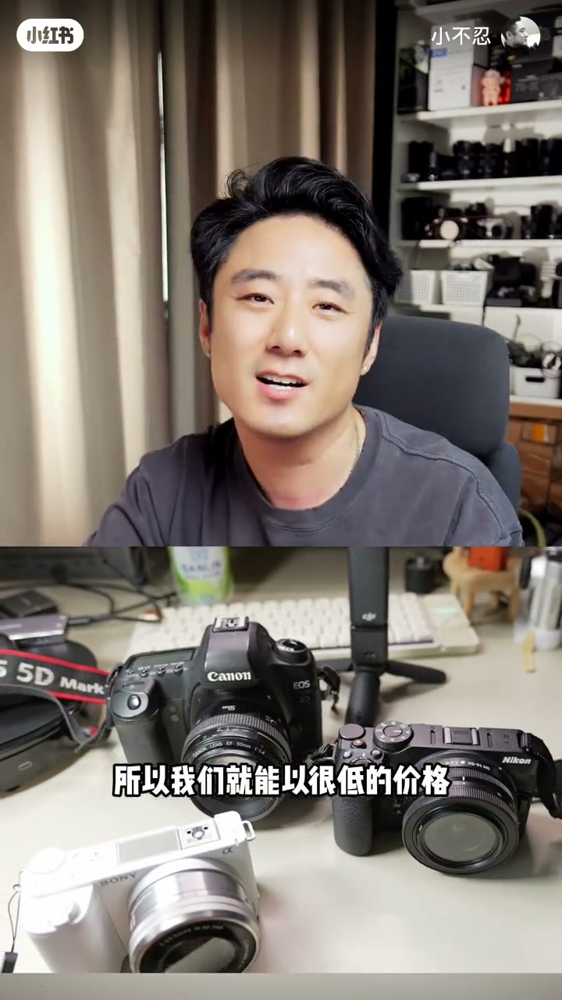
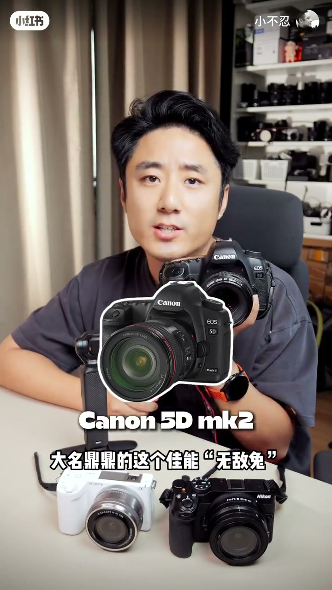
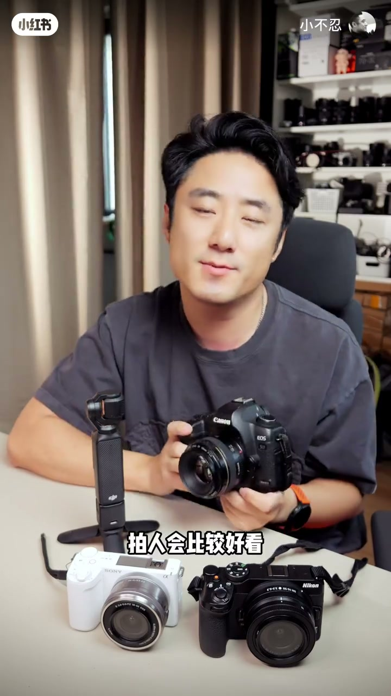
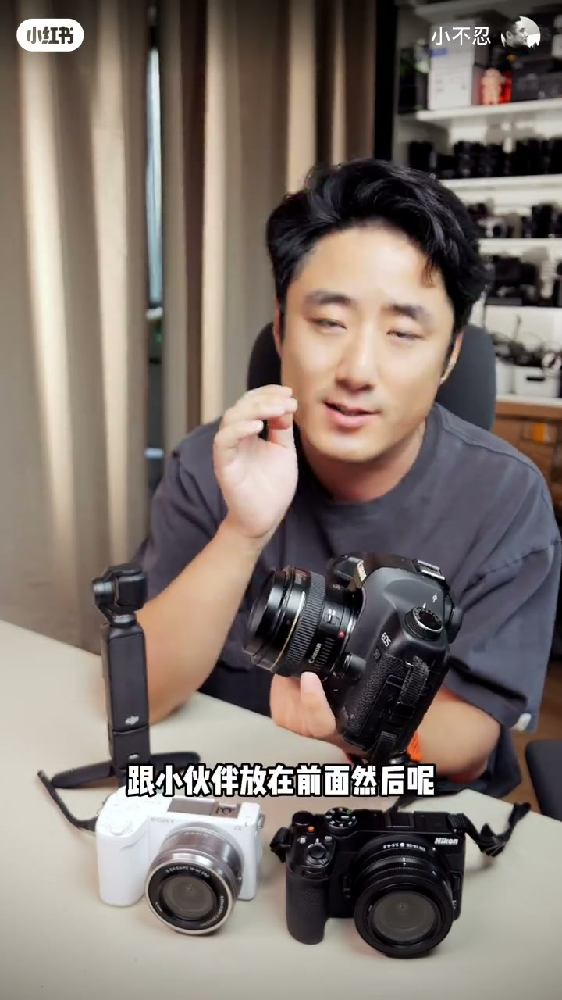
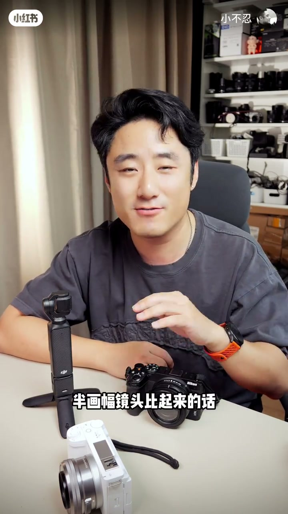
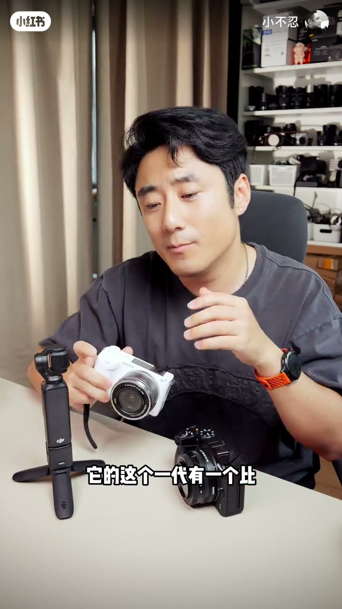
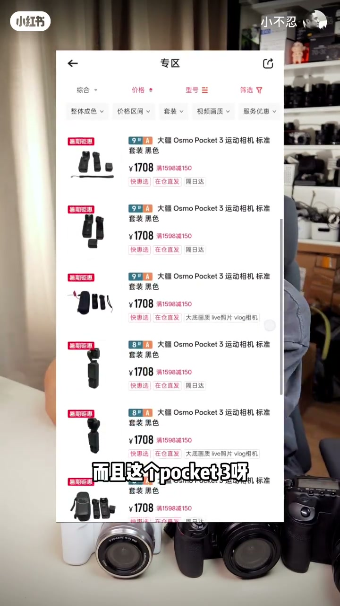

内容要点
小不忍按「价格水分已干、保有量大配件好找、具备学习成长性」三条原则，推荐四台超值二手：佳能 5D Mark II（全画幅画质与肤色、EF 镜头海量，但更重、CF 卡与无机身 Type-C/WiFi）、尼康 Z30（小饼干素质好、做工扎实，半幅原厂镜头少、视频偶发跑焦、外观偏理工）、索尼 ZV-E10（镜头多、有白机、一代带热靴可闪灯，一代屏一般但视频优于 Z30）、大疆 Pocket 3（约一千七准新、1 英寸、支持 Log 练调色）。收束：忌越看越贵；二手+转转七天无理由/一年质保，适合尝鲜，瓶颈再升级。价格以口播参考转转为准，会浮动。
知识结构
低价无水分、保有量大配件好找、能学光圈快门 ISO 与换镜成长。
全画幅画质/虚化/肤色；镁铝旗舰机身；EF 镜头便宜。缺点：更沉、CF 卡、无 Type-C/翻转触屏/WiFi。
约 2500–2600；小饼干素质与扎实手感。半幅原厂镜头少、视频跑焦、外观偏直男无白机。
约 2200–2300；镜头多、白机、一代热靴可闪。一代屏一般，视频画质优于 Z30。
Pocket4 炒高后 Pocket3 约 1700 准新；1 英寸+Log，适合学生练调色剪辑。
忌越看越贵买用不上的溢价；二手尝鲜，转转质保避坑，瓶颈再升级。
学生党低预算优先买「水分已干」的经典二手：拍照向看 5D2 全画幅或 Z30/ZV-E10 微单分工，视频向看 Pocket3。用平台质保兜底暗病，先尝鲜再按瓶颈升级，而不是一上来为新技术溢价买单。
00:00-01:06为何推经典二手：三原则
面向预算大约一千到三千的观众：经典二手发布时间已久，价格水分被榨干，能以很低价格买到当年大几千上万的机器，而性能放到今天仍够用。价格主要参考转转。
选机三原则：①价格足够低、未来不怎么降，玩一阵子再卖也不怎么赔；②保有量够大，配件好找，避开冷门机；③有成长性——能练光圈、快门、ISO，也能配更好镜头。

01:06-04:36第一台：佳能 EOS 5D Mark II
曾制霸风云的 5D2，上市约一万九，口播称转转成色不错大约八九百（ASR 曾误成八千九，按「最高两千」主题与行情校正）。优点：画质今天仍能打，全画幅虚化与等效焦距；祖传佳能肤色，影楼常用；镁铝合金旗舰机身扎实；EF 卡口原厂镜头保有量大、不少几百元就能入。
担心老单反暗病：他强调转转七天无理由+一年质保，影楼高快门或有暗伤可退换。缺点前置：比小微单沉（光学取景器、五棱镜、反光板），细胳膊女生可能吃力，可用更轻镜头平衡；体积与部分全画幅微单正面差不多。存储是老式 CF 卡，可用卡套转 SD；不支持机身 Type-C，可换自带 Type-C 的电池外充。翻转触屏、WiFi 确无，只能拔卡读卡器拷图——若只当拍照工具，他认为画质漂亮，这两天重点用下来比很多入门微单更好。



04:36-07:28微单双选：尼康 Z30 vs 索尼 ZV-E10
若嫌单反沉旧、想要轻便时尚：尼康 Z30，转转约 2500–2600 成色不错。优点：尼康小饼干镜头素质数一数二，随便一枚小镜头画质已不错；做工继承单反扎实感，塑料机身仍显沉稳，甚至不输万元全画幅手感。注意：尼康重心在全画幅 Z 卡口，半幅原厂镜头偏少，常需找副厂；拍照对焦尚可，视频偶发跑焦；设计偏理工直男，无白色等配色，女生可能不感冒。
价格类似的索尼 ZV-E10：约 2200–2300，超 2500 成色更好挑。相对 Z30 镜头明显更多，有白机更适女生；一代反而有机械快门+热靴，闪光灯更好配。不如之处：一代屏幕观感一般（二代有提升），但视频画质优于 Z30。总结：重镜头光学与扎实做工、男生 → 偏 Z30；要时尚感与镜头生态、女生/白机 → 偏 ZV-E10。


07:28-09:23视频向 Pocket3 + 理性消费收束
以上偏拍照；若拍视频，更推 Pocket 类。Pocket4 炒高后 Pocket3 价格雪崩，转转约一千七可买准新。作者仍在用：大疆首次 1 英寸传感器那代，纸面不如 Pocket4，但手机端社交平台观看差距不大；支持大疆 Log，学生可拍灰片回电脑练调色、剪辑节奏与配乐转场。
总结心态：挑相机最忌越看越贵、什么都想要就一直加钱，最后为一万多机器里用不上的新技术溢价买单。一时兴起尝鲜，二手占用资金少；最怕踩坑暗病，转转七天无理由+一年质保可规避。先买入门二手感受一段时间，技术提升、性能成瓶颈再升级，才是更理性的选择。

完整转录（276段）
以下文本由 Whisper medium 模型自动转录，可能存在少量识别误差，已尽可能修正。
今天就来给小伙伴们带来一期超值的经典二手相机推荐
其实对于预算紧张的小伙伴们
比方说你的预算只有1000到3000左右的小伙伴们来说
这种经典的二手相机非常值得推荐
虽然它的发布时间已经过去一段时间了
但是它的水分已经被榨干了
所以我们就能以很低的价格买到当年大几千上万的机器
而且这些机器的性能即便放到今天其实也是完全够用的
然后咱们今天每一台设备都会跟小伙伴们先说清楚价格
价格主要是参考转转
然后咱们闲话小区正式开始咱们的节目
hello 伙伴们大家好
我是小伙伴
咱们今天给小伙伴推荐的这个机器主要是依据三个原则
第一就是价格足够低
没有啥水分了
而且未来也不怎么会降价的
所以小伙伴们玩一段时间再卖的话可能也不怎么赔
然后第二个就是保有量要足够大
因为像这种二手相机你要是特别冷闷的
它的配件不太好找
所以咱们今天的这些机器配件都非常非常好找
然后第三个就是它具备不错的成长性
就是别看它便宜
但是小伙伴们要是用来学习一些什么基础的摄影知识
比方说光圈快MSO
或者说你想配一些这个比较好的镜头
这些机器也都是能满足的
然后咱们接下来开始正式介绍咱们今天的第一台机器
就是曾经这个制刹风云大名鼎鼎的这个佳能5D2
它的这个官方型号叫佳能EOS 5D Mark II
然后因为它实在是太过于有名
保有量太高了
所以网友们就给它起了一个外号就叫5D2
这台机器它当年的这个上市价格高达19000元
现在它的这个二手价在转转上我们再看了一下
大概这个8900块钱就能买到一个成色还不错的了
而且这台机器的优点非常多
咱们只说最主要的
第一个就是这台相机的画质放到今天依然非常能打
比这个手机CCD还是明显要好的
而且因为这台相机它采用了一个全画幅的传感器
所以它的这个虚化包括它的这个等效焦距
都是全画幅的这个标准
然后再一个就是它有祖传的佳能的这个肤色油画
当年也是很多影楼配备的机器
拍人会比较好看
然后第二个就是它的这个质量极其的扎实可靠
然后它的这个机身采用了这个旗舰机身
采有的这个铝铂合金的这个外壳工艺
即便是你磕一下碰一下什么
它也不会有这个明显的受损
而且它的这个操控什么的
一上手就是这种扎实可靠的专业机的这种水准
然后第三个就是这台相机的这个
原厂的镜头保有量非常的大
因为它采用的是这个佳能的这个EF卡口
所以呢小伙伴们就能买到很多
当年佳能的这种经典的镜头型号
而且现在接着这种镜头的价格也不贵
900块钱就能随便买
像我这个小谭语就很出票
当然了有小伙伴说这不是一台单反吗
那么多去这么久了
这个难免不出点小问题啥的
其实呢这也是为啥
我跟小伙伴们说这个转转的原因
因为转转这是七天无理由
还有一年质保
就算你买到一个这个有暗病有暗伤的
或者是影楼出来的几十万次快门的这种
有问题的机器呢
你大不了你直接给它退回去换一台
或者在一年里面出现任何问题
这个转转也会提供质保
然后多了这一重保障呢
像这种比较老的二手经典型号
我觉得就可以搞了
当然了除了刚才咱们提到的这些优点
这些机器呢也不是没有缺点
然后呢也是提前跟小伙伴们
把这个缺点跟小伙伴们放在前面
省得这个小伙伴们拿到手之后你失望
第一个呢就是这台相机
它的这个重量要比现在这种小微单
还是要沉上一些的
因为它里面有这个光学
奇迹景气
五棱梗结构
还有下面的这个反光板
这些结构就让它比现在的这个微单
多了一些部件
不过呢它的这个体积说实话
比现在这个全画幅
倒没有什么明显的差异
我给小伙伴们随便拿一个鸡皮
比方说这个在这个全画幅里面
比较小的这个尼康自救三
小伙伴们你看
它们的这个正面的这个体积
我觉得是差不多的
所以呢体积其实大差不差的
小伙伴们就是这个重量要考虑一下
特别是这个各位比较细的女生
你拿着呢可能会有一点吃力
不过呢可以配一个稍微轻一点的镜头
进行一个均衡
然后第二个需要提醒小伙伴们注意的
就是这台相机呢
它配备的是一个老的像这样的CAF卡
像这种卡呢现在不好买了
不过呢我帮小伙伴们已经寻找解决方案了
现在呢网上是有这种CAF卡套的
通过这个卡套一转进
你就能搞一个这个SD卡进去
这个呢我觉得倒是不是一个什么大的问题
然后第三个呢就是这台相机呢
它是不支持这个机身Type-C口充电的
不过呢现在也是网上有这种
本身自带Type-C口的这种电池
你可以把电池拿出来通过这个充电板充电
所以呢这个我觉得也不是一个大问题
虽然像这几点都有这个替代方案
但是现在这个新的这种
主流微单材配备的这个翻转触摸屏啊
然后这个WiFi传照片啊
那就确实是没有办法了
小伙伴们只能把这个卡拔出来
你弄一个读卡器通过手机来拷照片
不过如果小伙伴们真的是
只把它当成一个纯粹的拍照工具的话
我觉得画质确实是非常的漂亮
这两天我也是重点用了一下这个机器
比很多入门的微单确实要好
然后呢如果小伙伴们觉得
哎确实是有点沉了
然后你像这种老的这个单法呢
就给人一种陈旧的感觉
你还是想要一些这种轻便的
这种时尚元素的话
那么接下来就来给小伙伴们
推荐第二台机器
就是尼康的Z30
这台相机呢之前也是给小伙伴们出过节目
现在的这个二手架呢
这个2500 2600
你就在转转上就能挑到一个成色不错的了
这台相机为什么给小伙伴们推荐呢
主要是有以下优点
一个呢就是尼康的这一枚小饼干
镜头的这个素质在所有品牌里面
算是数一数二的第一题对了
小伙伴们哪怕你搞一个这个小镜头
你去拍照
你会发现它的这个画质就已经不错了
然后再一个呢就是尼康这种扎实的这个做工
是严成字这种单反的
你像索尼的这个这个衣服给小伙伴推荐
它的这种气质包括它的这种做工手感什么的
跟这种单反还是有明显的差异的
但是尼康的Z30
你哪怕跟这种万元的全画幅专业机器比的话
它也一点都不差
虽然它用了一个塑料的机身
但是拿在手里就是给人很扎实
然后如果小伙伴们要打算入手这台尼康的Z30的话
有几点也是需要提醒小伙伴们注意的
一个呢就是它的这个镜头
尼康的这个重心啊
目前都放在了它这种全画幅的Z卡口镜头上
它给这个半画幅的这个镜头说实话数量确实是有点少
跟这个你像索尼啊包括富士啊半画幅镜头比起来的话
数量是明显偏少的
它的这个数量跟这个佳能的差不多
所以小伙伴们可能需要找一找这种
副厂的它的这种半画幅的小镜头这是一个
然后再一个呢就是这台相机的这个对焦
你用来拍照的话没什么问题
但是用来录视频的话
你会发现它有时候会出现跑焦的现象
然后第三点呢就是这台相机的这种设计
我感觉是比较偏理工直男的
可能男生用起来会觉得它挺好看的
但是女生的话感觉好像会没有那么好看
它也没有提供什么白色呀其他的配色
所以这台相机有一点点的直男
然后如果小伙伴们要是觉得你的这个无论是外观
你不感冒或者说你觉得它这个镜头数量偏少
那么还有一台跟它这个价格类似的
就是索尼的这台ZV10
这台相机价格跟它非常的类似
也是2000出头2200 2300就能买到
然后呢要是超过2500的话
各种成色基本上就随便挑了
索尼的ZV10相对于尼康
它的这个镜头的数量是明显的要多上不少的
而且这台相机也多了一个白色的配色
可能更加适合女生一点
而且呢这个索尼的ZV10
它的这个一代有一个比二代还要强的地方呢
就是它是支持这个闪光灯的
它本身是有这个机械快门和热血口的
所以它这个闪光灯会更好配一些
但是呢这台相机也有一个不如尼康的地方
就是它的这个屏幕是不如尼康好看的
尼康的这个屏幕呢是非常的清晰漂亮
色彩呢也比较鲜艳
但是索尼的ZV10它到了二代有提升它的这个屏幕
但是一代它的这个屏幕的观感比较一般
不过好在它的这个视频画质又比这个尼康的Z30要好
所以呢总的来说这两台相机呢价格差不多
然后呢它们这两个机身呢我觉得也是各有优劣的
如果你要是比较看重于这个镜头的光学素质啊
或者说你比较看重于扎实的做工啊
你是男生啊
我觉得这台相机可能会更加的适合你
然后如果是女生的话
我觉得这个索尼它更有时尚感一些
更适合女生
特别是这个白色的蓝的
好了然后最后呢还有一个就是以上这台设备呢
虽然它们拍照我觉得都是不错的
但是如果小伙伴要拍视频的话
还是这种像Pocket这类的产品比较值得推荐
特别是你像现在的这个Pocket 4出来之后炒的价格特别高
之前的这个Pocket 3呢价格就雪崩
甚至呢无人问津
所以呢它的这个性价比非常高
目前在转转上一千七基本上就能买到一个准新成色的
而且这个Pocket 3啊我现在还在用
它用的是这个大疆第一次搭载这个1英寸传感器的这个镜头
虽然可能你从这个数据上看不如Pocket 4
但是呢如果我们要在这个社交平台在手机上看的话
我觉得其实是区别不大的
然后这台相机还有一个优势
就是对于这个学生小伙伴们来说
它是支持大疆的这个Log的
你可以拍一回片然后回去在电脑上装一个后期软件
你玩一玩调色呀玩一玩剪辑呀
找一找这种剪辑的节奏感呀配乐转场什么的
还是比较有意思
好的这样呢咱们最后呢来简单总结一下
其实这个买相机呀挑相机的时候呢
特别忌讳的一个心态呢就是这个越看越贵
你啥都想要
你啥都想要呢就得啥都得加钱
到最后呢你看到一万多块钱的这个机器了
但最后你买回来呢你会发现
其实里面你大部分为了这个高溢价买出来的
这种新技术也好新性能也好
其实是用不上的
而且好多小伙伴其实买相机呢
就是一时兴起图一个新鲜
然后对于这种情况呢
我觉得像这种二手相机呢非常非常值得考虑
一方面呢就是你用两天你发现你不喜欢了
他吃亏了你也不会占用你太多的资金
也不会贵太多的钱
然后再一个呢买二手相机
其实特别怕的呢就是踩疼
有个暗病啊有个什么质量问题
真的是麻烦死你
然后转转呢它提供这个七天的无理由
提供一年的质保也可以规避掉这些问题
所以呢我觉得对于好多小伙伴们来说
你买一个二手的这种入门小相机
你尝尝鲜然后感受一段时间
未来你的技术提升之后
发现它的这个性能成为质量你的平顶
到时候我们再升级
我觉得是一个更加理性的一个消费选择
好的家人们以上就是咱们这期
关于这个经典二手超高效率相机的
全部内容啊小伙伴们
有任何问题欢迎在评论区给我留言
咱们下期节目再见吧拜拜